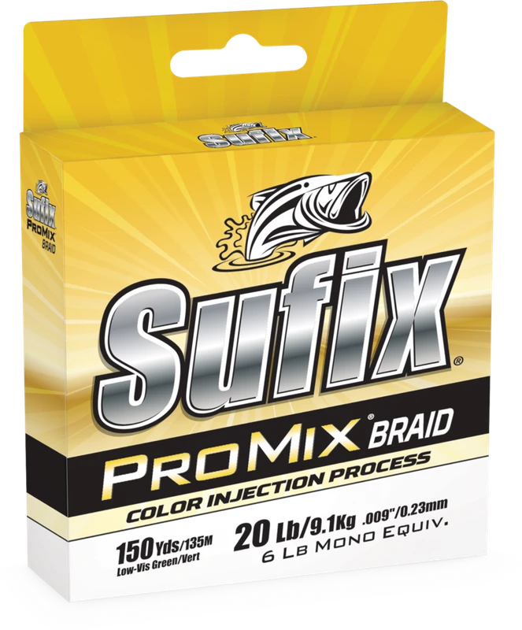

Sufix ProMix Braid
Diameter chart, reel capacity & backing guide

ProMix Braid is Sufix's HMPE mainline with a color-retention-focused Color Injection process. It is distinct from ProMix monofilament. The U.S. braid chart includes 6 lb, then 10-80 lb; there is no verified 8 lb row.
- Construction
- Densely woven HMPE braid with Sufix Color Injection processing
- Listed strengths
- 6-80 lb
- Line type
- Braid main line
Is ProMix Braid right for your setup?
ProMix Braid suits an angler comparing a general-purpose braid for fresh or salt water who wants to plan a practical working fill. Sufix emphasizes color retention, but that is not a measured service-life promise from ReelCalc. Choose a visible or subdued color for your own line-watching needs and check the package offered in that exact strength and color.
How much ProMix Braid will fit?
Calculated estimates, not measured fills. Stop at the reel manufacturer's fill level even if some line remains.
Sufix ProMix Braid diameter chart
Only the source-reviewed strengths and package combinations listed below are included. Converted measurements are identified in the source notes.
| Strength | Inches | mm | Spools (yd) |
|---|---|---|---|
| 0.006 | 0.1524 | 150, 300 | |
| 0.008 | 0.2032 | 150, 300, 1200, 3500 | |
| 0.0085 | 0.2159 | 150, 300, 1200, 3500 | |
| 0.009 | 0.2286 | 150, 300, 1200, 3500 | |
| 0.011 | 0.2794 | 150, 300, 1200, 3500 | |
| 0.013 | 0.3302 | 150, 300, 1200, 3500 | |
| 0.014 | 0.3556 | 150, 300, 1200, 3500 | |
| 0.016 | 0.4064 | 150, 300, 1200, 3500 | |
| 0.018 | 0.4572 | 150, 300, 1200, 3500 |
Choosing your ProMix Braid strength
For the smallest verified size, 6 lb, the current variants support 150 and 300 yards. The larger bulk lengths begin at 10 lb; do not buy by the page-wide package list alone.
The 15 lb row is 0.0085 inch, between the 10 lb row at 0.008 and 20 lb at 0.009. Those differences matter more to spool volume than the ProMix name.
The 40-80 lb options need a suitable rod and reel for heavier fishing. A capacity result is not proof that a compact reel or light rod is appropriate for that strength.
Specification-based guidance, not a ReelCalc hands-on performance test. Capacity results are estimates, not measured fills.
Want a guided recommendation?
Continue in the Setup WizardSame pound test, different diameters
At your selected strength
Loading diameter comparisons...
What changes with another line?
Nearby diameters in the line database
| Line | Strength | Inches | Difference |
|---|---|---|---|
| Loading line database... | |||
Backing, working line & leaders
Choose filler or bulk by demand
A 150-yard package can supply a working fill over backing. Bulk ProMix makes more sense when the total verified demand across reels exceeds a smaller package, not simply because a large spool appears in the menu.
Wind a firm braid bed
Follow the reel instructions for braid attachment, maintain even tension and stop at the recommended fill level. Color retention does not prevent loose winding or braid slipping on an unsuitable arbor.
Do not substitute ProMix mono
ProMix monofilament is a separate Sufix product. The same brand and family name are not enough to identify a diameter for this braid capacity calculation.
How Much Fits on These Reels?
Estimated full-spool capacity for the ProMix Braid strength selected above, with no backing. These are calculated examples, not physical tests or recommendations for every pairing.
Loading capacity estimates...
ProMix Braid questions, answered
Is ProMix Braid the same as ProMix mono?
No. This product is HMPE braid with Color Injection processing. ProMix monofilament has its own strengths and diameters.
Does the color-retention claim mean it never fades?
No. Sufix markets improved color retention; this guide does not establish a lifetime, a field-test result or a no-fading guarantee.
Which spool sizes are verified for 6 lb?
The current U.S. variants list 150 and 300 yards for 6 lb. The 1,200- and 3,500-yard options are verified from 10 lb upward.
How much ProMix Braid will fit my reel?
Use the exact strength and the reel's published capacity. Pound test is not a fixed diameter, so equal-strength products can produce different fill estimates.
Is one 150-yard package enough?
Only when it covers the planned working length and an appropriate reserve. Backing can fill unused volume, but cannot supply more working line for long casts, deep drops or fish runs.
Specifications & sources
Official sources retrieved September 13, 2026. Inch diameters are published; millimeters are calculated as inches x 25.4. Package options are not a stock or price guarantee.
Calculations use the catalog's listed inch diameters. Published inch and millimeter values may differ slightly because of rounding.
- Official Sufix specification source Exact numeric rows, package identity and model positioning. Saved source evidence is retained in the Group B research pack.